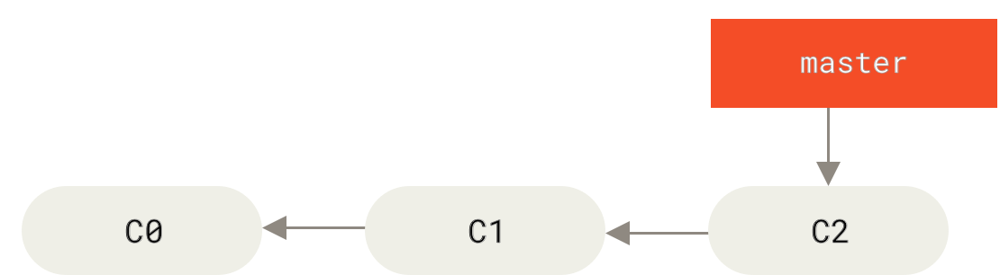
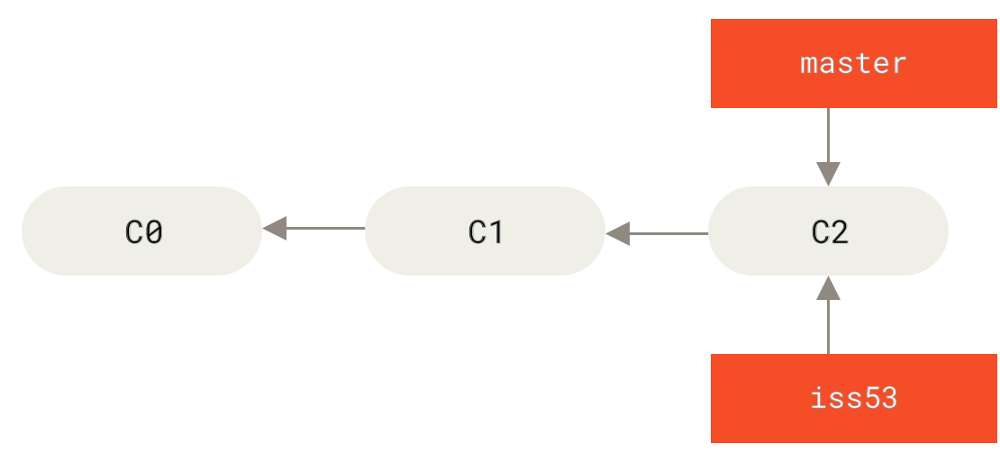
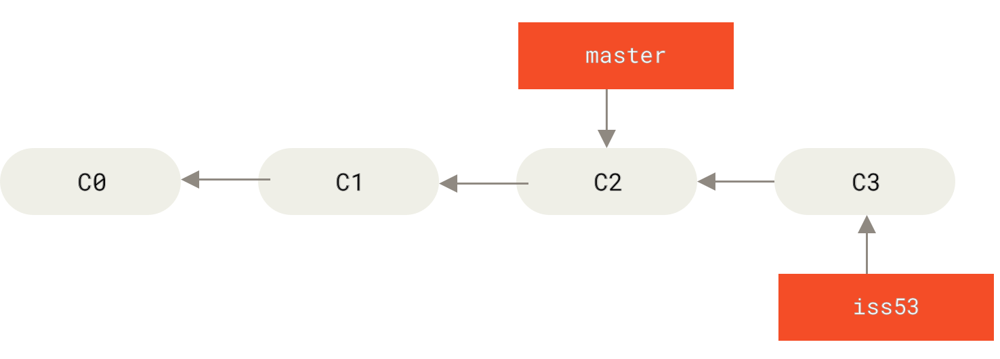
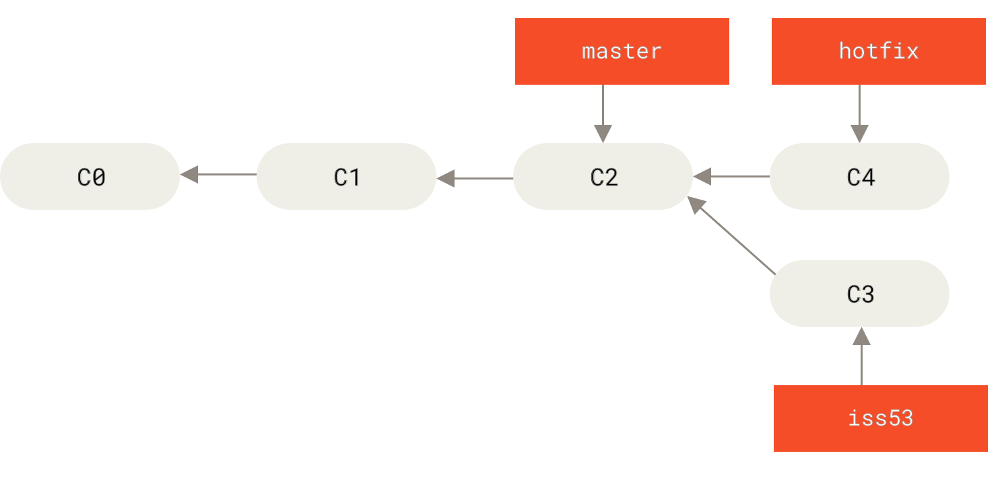
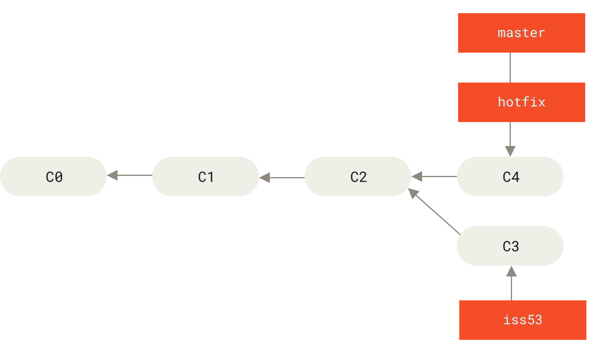
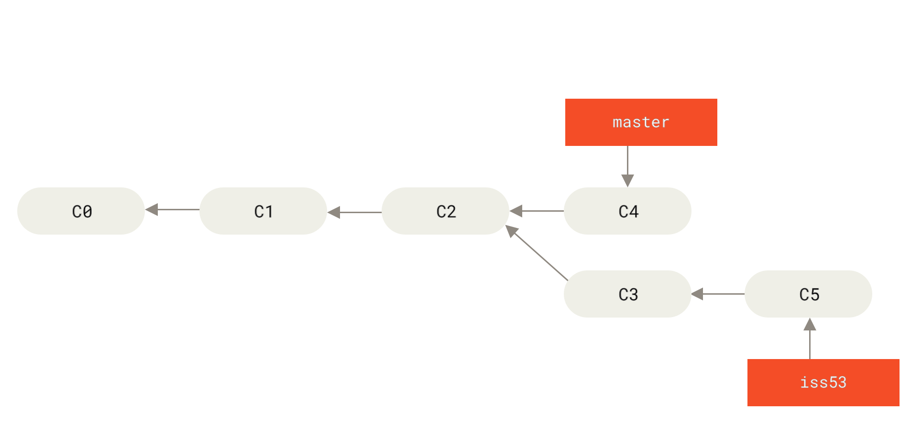
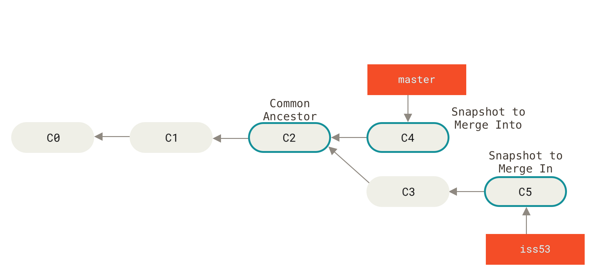
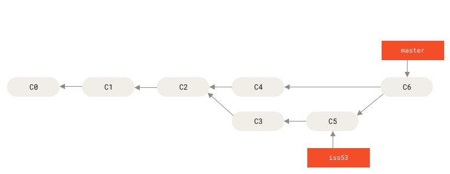

The original, as published: Scott Chacon and Ben Straub, Pro Git (2nd edition), Git Branching: Basic Branching and Merging. CC BY-NC-SA 3.0, https://creativecommons.org/licenses/by-nc-sa/3.0/. Imported as published, from https://git-scm.com/book/en/v2/Git-Branching-Basic-Branching-and-Merging https://git-scm.com/book/en/v2/Git-Branching-Basic-Branching-and-Merging
Let’s go through a simple example of branching and merging with a workflow that you might use in the real world. You’ll follow these steps:
Do some work on a website.
Create a branch for a new user story you’re working on.
Do some work in that branch.
At this stage, you’ll receive a call that another issue is critical and you need a hotfix. You’ll do the following:
Switch to your production branch.
Create a branch to add the hotfix.
After it’s tested, merge the hotfix branch, and push to production.
Switch back to your original user story and continue working.
First, let’s say you’re working on your project and have a couple of commits already on the master branch.

Figure 18. A simple commit history
You’ve decided that you’re going to work on issue #53 in whatever issue-tracking system your company uses. To create a new branch and switch to it at the same time, you can run the git checkout command with the -b switch:
$ git checkout -b iss53
Switched to a new branch "iss53"This is shorthand for:
$ git branch iss53
$ git checkout iss53

Figure 19. Creating a new branch pointer
You work on your website and do some commits. Doing so moves the iss53 branch forward, because you have it checked out (that is, your HEAD is pointing to it):
$ vim index.html
$ git commit -a -m 'Create new footer [issue 53]'

Figure 20. The iss53 branch has moved forward with your work
Now you get the call that there is an issue with the website, and you need to fix it immediately. With Git, you don’t have to deploy your fix along with the iss53 changes you’ve made, and you don’t have to put a lot of effort into reverting those changes before you can work on applying your fix to what is in production. All you have to do is switch back to your master branch.
However, before you do that, note that if your working directory or staging area has uncommitted changes that conflict with the branch you’re checking out, Git won’t let you switch branches. It’s best to have a clean working state when you switch branches. There are ways to get around this (namely, stashing and commit amending) that we’ll cover later on, in Stashing and Cleaning. For now, let’s assume you’ve committed all your changes, so you can switch back to your master branch:
$ git checkout master
Switched to branch 'master'At this point, your project working directory is exactly the way it was before you started working on issue #53, and you can concentrate on your hotfix. This is an important point to remember: when you switch branches, Git resets your working directory to look like it did the last time you committed on that branch. It adds, removes, and modifies files automatically to make sure your working copy is what the branch looked like on your last commit to it.
Next, you have a hotfix to make. Let’s create a hotfix branch on which to work until it’s completed:
$ git checkout -b hotfix
Switched to a new branch 'hotfix'
$ vim index.html
$ git commit -a -m 'Fix broken email address'
[hotfix 1fb7853] Fix broken email address
1 file changed, 2 insertions(+)

Figure 21. Hotfix branch based on master
You can run your tests, make sure the hotfix is what you want, and finally merge the hotfix branch back into your master branch to deploy to production. You do this with the git merge command:
$ git checkout master
$ git merge hotfix
Updating f42c576..3a0874c
Fast-forward
index.html | 2 ++
1 file changed, 2 insertions(+)You’ll notice the phrase “fast-forward” in that merge. Because the commit C4 pointed to by the branch hotfix you merged in was directly ahead of the commit C2 you’re on, Git simply moves the pointer forward. To phrase that another way, when you try to merge one commit with a commit that can be reached by following the first commit’s history, Git simplifies things by moving the pointer forward because there is no divergent work to merge together — this is called a “fast-forward.”
Your change is now in the snapshot of the commit pointed to by the master branch, and you can deploy the fix.

Figure 22. master is fast-forwarded to hotfix
After your super-important fix is deployed, you’re ready to switch back to the work you were doing before you were interrupted. However, first you’ll delete the hotfix branch, because you no longer need it — the master branch points at the same place. You can delete it with the -d option to git branch:
$ git branch -d hotfix
Deleted branch hotfix (3a0874c).Now you can switch back to your work-in-progress branch on issue #53 and continue working on it.
$ git checkout iss53
Switched to branch "iss53"
$ vim index.html
$ git commit -a -m 'Finish the new footer [issue 53]'
[iss53 ad82d7a] Finish the new footer [issue 53]
1 file changed, 1 insertion(+)

Figure 23. Work continues on iss53
It’s worth noting here that the work you did in your hotfix branch is not contained in the files in your iss53 branch. If you need to pull it in, you can merge your master branch into your iss53 branch by running git merge master, or you can wait to integrate those changes until you decide to pull the iss53 branch back into master later.
Suppose you’ve decided that your issue #53 work is complete and ready to be merged into your master branch. In order to do that, you’ll merge your iss53 branch into master, much like you merged your hotfix branch earlier. All you have to do is check out the branch you wish to merge into and then run the git merge command:
$ git checkout master
Switched to branch 'master'
$ git merge iss53
Merge made by the 'recursive' strategy.
index.html | 1 +
1 file changed, 1 insertion(+)This looks a bit different than the hotfix merge you did earlier. In this case, your development history has diverged from some older point. Because the commit on the branch you’re on isn’t a direct ancestor of the branch you’re merging in, Git has to do some work. In this case, Git does a simple three-way merge, using the two snapshots pointed to by the branch tips and the common ancestor of the two.

Figure 24. Three snapshots used in a typical merge
Instead of just moving the branch pointer forward, Git creates a new snapshot that results from this three-way merge and automatically creates a new commit that points to it. This is referred to as a merge commit, and is special in that it has more than one parent.

Figure 25. A merge commit
Now that your work is merged in, you have no further need for the iss53 branch. You can close the issue in your issue-tracking system, and delete the branch:
$ git branch -d iss53 Occasionally, this process doesn’t go smoothly. If you changed the same part of the same file differently in the two branches you’re merging, Git won’t be able to merge them cleanly. If your fix for issue #53 modified the same part of a file as the hotfix branch, you’ll get a merge conflict that looks something like this:
$ git merge iss53
Auto-merging index.html
CONFLICT (content): Merge conflict in index.html
Automatic merge failed; fix conflicts and then commit the result.Git hasn’t automatically created a new merge commit. It has paused the process while you resolve the conflict. If you want to see which files are unmerged at any point after a merge conflict, you can run git status:
$ git status
On branch master
You have unmerged paths.
(fix conflicts and run "git commit")
Unmerged paths:
(use "git add <file>..." to mark resolution)
both modified: index.html
no changes added to commit (use "git add" and/or "git commit -a")Anything that has merge conflicts and hasn’t been resolved is listed as unmerged. Git adds standard conflict-resolution markers to the files that have conflicts, so you can open them manually and resolve those conflicts. Your file contains a section that looks something like this:
<<<<<<< HEAD:index.html
<div id="footer">contact : email.support@github.com</div>
=======
<div id="footer">
please contact us at support@github.com
</div>
>>>>>>> iss53:index.htmlThis means the version in HEAD (your master branch, because that was what you had checked out when you ran your merge command) is the top part of that block (everything above the =======), while the version in your iss53 branch looks like everything in the bottom part. In order to resolve the conflict, you have to either choose one side or the other or merge the contents yourself. For instance, you might resolve this conflict by replacing the entire block with this:
<div id="footer">
please contact us at email.support@github.com
</div>This resolution has a little of each section, and the <<<<<<<, =======, and >>>>>>> lines have been completely removed. After you’ve resolved each of these sections in each conflicted file, run git add on each file to mark it as resolved. Staging the file marks it as resolved in Git.
If you want to use a graphical tool to resolve these issues, you can run git mergetool, which fires up an appropriate visual merge tool and walks you through the conflicts:
$ git mergetool
This message is displayed because 'merge.tool' is not configured.
See 'git mergetool --tool-help' or 'git help config' for more details.
'git mergetool' will now attempt to use one of the following tools:
opendiff kdiff3 tkdiff xxdiff meld tortoisemerge gvimdiff diffuse diffmerge ecmerge p4merge araxis bc3 codecompare vimdiff emerge
Merging:
index.html
Normal merge conflict for 'index.html':
{local}: modified file
{remote}: modified file
Hit return to start merge resolution tool (opendiff):If you want to use a merge tool other than the default (Git chose opendiff in this case because the command was run on macOS), you can see all the supported tools listed at the top after “one of the following tools.” Just type the name of the tool you’d rather use.
| Note | If you need more advanced tools for resolving tricky merge conflicts, we cover more on merging in Advanced Merging. |
After you exit the merge tool, Git asks you if the merge was successful. If you tell the script that it was, it stages the file to mark it as resolved for you. You can run git status again to verify that all conflicts have been resolved:
$ git status
On branch master
All conflicts fixed but you are still merging.
(use "git commit" to conclude merge)
Changes to be committed:
modified: index.htmlIf you’re happy with that, and you verify that everything that had conflicts has been staged, you can type git commit to finalize the merge commit. The commit message by default looks something like this:
Merge branch 'iss53'
Conflicts:
index.html
#
# It looks like you may be committing a merge.
# If this is not correct, please remove the file
# .git/MERGE_HEAD
# and try again.
# Please enter the commit message for your changes. Lines starting
# with '#' will be ignored, and an empty message aborts the commit.
# On branch master
# All conflicts fixed but you are still merging.
#
# Changes to be committed:
# modified: index.html
#If you think it would be helpful to others looking at this merge in the future, you can modify this commit message with details about how you resolved the merge and explain why you did the changes you made if these are not obvious.